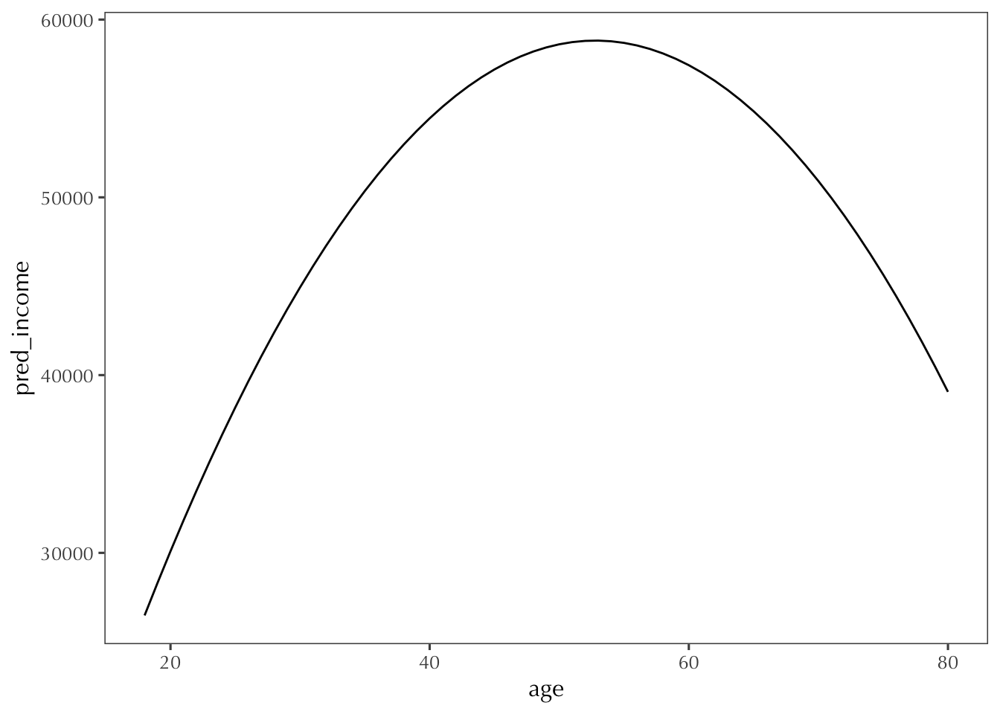

Use a normal linear regression to estimate height from male
library(gssr)
Package loaded. To attach the GSS data, type data(gss_all) at the console.
For the codebook, type data(gss_doc).
For the panel data and documentation, type e.g. data(gss_panel08_long) and data(gss_panel_doc).
m_HM <-glm(height ~ male, data = d17, family =gaussian(link="identity"))m_HMA <-glm(height ~ male + age, data = d17, family =gaussian(link="identity"))msummary(list(m_HM, m_HMA), output ="gt") |>opt_table_font(font ="Optima")
(1)
(2)
(Intercept)
64.410
64.469
(0.112)
(0.270)
male
5.705
5.706
(0.161)
(0.161)
age
-0.001
(0.006)
Num.Obs.
1397
1397
R2
0.474
0.474
AIC
7044.6
7046.5
BIC
7060.3
7067.5
Log.Lik.
-3519.293
-3519.263
RMSE
3.00
3.00
The intercept of the first model appears to report the average height of a non-male in the sample, about 5 feet 4.4 inches. The coefficient of male is positive, so it implies that the average height of men in the sample is 5.7 inches taller than the average woman.
In the second model, the intercept is not really meaningful, since it is not meaningful to know the height of a non-male with age zero. The coefficient of male is similar to the first model, and the coefficient of age seems to imply that with every increase of age (1 year), there is a reduction of .001 inches in height, based on the sample.
m_cAA2 <-glm(coninc ~ age + age_squared, data = d18, family =gaussian(link="identity"))grid18 <-tibble(age =18:80, age_squared = age^2)grid18$pred_income <-predict(m_cAA2, newdata = grid18)ggplot() +geom_line(aes(x=age, y=pred_income), grid18)

\(\beta _0\) here is the intercept term. It’s around -15.6k, and since age is associated with a positive increase in income, it’s acting as an offset that helps the model fit the incomes of the younger cases in the sample.
m_19 <-glm(coninc ~ age_centered + age_squared, data = d19, family =gaussian(link="identity"))msummary(list(m_cAA2, m_19), output ="gt") |>opt_table_font(font ="Optima")
(1)
(2)
(Intercept)
-15627.326
58427.559
(6832.034)
(1251.135)
age
2820.031
(286.520)
age_squared
-26.706
-26.706
(2.765)
(2.765)
age_centered
204.384
(51.712)
Num.Obs.
2147
2147
R2
0.043
0.043
AIC
51760.4
51760.4
BIC
51783.1
51783.1
Log.Lik.
-25876.205
-25876.205
RMSE
41494.77
41494.77
With this updated model, the coefficient of age_squared has remained the same, and the direction of the coefficient on age has remained the same, but it had decreased. However, now our intercept value \(\beta _0\) has changed to be the mean income of the data, around 58.4k. All evaluation metrics between the old model and the new one are identical.
12.1.10
Transform age to units of standard deviations from the mean, and fit model again:
m_110 <-glm(coninc ~ age_std + age_squared, data = d110, family =gaussian(link="identity"))msummary(list(m_cAA2, m_110), output ="gt") |>opt_table_font(font ="Optima")
(1)
(2)
(Intercept)
-15627.326
58427.559
(6832.034)
(1251.135)
age
2820.031
(286.520)
age_squared
-26.706
-8711.331
(2.765)
(901.848)
age_std
3691.355
(933.966)
Num.Obs.
2147
2147
R2
0.043
0.043
AIC
51760.4
51760.4
BIC
51783.1
51783.1
Log.Lik.
-25876.205
-25876.205
RMSE
41494.77
41494.77
Looks like the intercept \(\beta _0\) is the mean income value again, but now that we are working in units of standard deviations, the coefficients for the age and age squared predictors are very different. Basically, for every movement of one standard deviation from the mean age at zero, income changes by 3691.36 for the age term, and by -8711.33 for the age_squared term. As in 12.1.9, the model evaluation figures are identical to the original.
# A tibble: 2 × 5
married avg_coninc sd n std_error
<int> <dbl> <dbl> <int> <dbl>
1 0 36818. 34643. 1229 17321.
2 1 67492. 45378. 923 22689.
m_111 <-glm(coninc ~ married, data = d111, family =gaussian(link="identity"))msummary(m_111, output ="gt") |>opt_table_font(font ="Optima")
(1)
(Intercept)
36817.678
(1129.716)
married
30674.237
(1725.002)
Num.Obs.
2152
R2
0.128
AIC
51676.3
BIC
51693.3
Log.Lik.
-25835.134
RMSE
39586.17
Note that the coefficients match up with the dplyr table: unmarried’s average income is the same as our model’s intercept, which makes sense. And, if we add the model’s coefficient for married, we get the average income of a married person from the dplyr table, which also makes sense.
Now, to calculate the standard error from the dplyr table:
sqrt((34642.61^2/1229) + (45378.47^2/923))
[1] 1790.945
Comparing this to the standard error of the model’s married coefficient 1725, we can see these values are pretty similar.
12.1.12
We can reconstruct a 2x2 containing averages with binary interactions.
Based on our intercepts and coefficients, on a weekday with average temperature and wind speed, the expected ridership is 3683.442. Factoring in the weekendTRUE coefficient of -713.575, we find that the expected ridership on a weekend is instead 2,969.867.
It seems that this model does not fit well because rider behavior has a bit of an inconsistent relationship with our predictor variables over time. At the turn of 2012 is where our model is best fit, and it had to compromise to fit earlier in 2011 and up to 2013. There are likely variables beyond those which we have included in the model which are somehow impacting ridership. Perhaps something like the availability of other public transport, for instance.
filter(bikes, abs(resid) ==max(abs(resid)))
date season year month day_of_week weekend holiday temp_actual
1 2012-10-29 fall 2012 Oct Mon FALSE no 64.472
temp_feel humidity windspeed weather_cat rides resid
1 71.546 88 23.9994 categ3 20 -3490.348
This is when Hurricane Sandy hit DC. As a result, the wind speed is crazy and the model is just not fit for such an outlier.